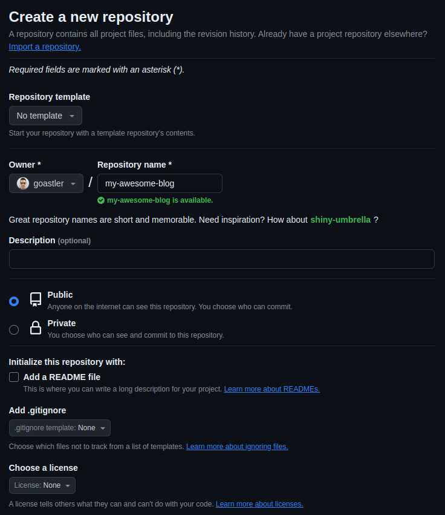
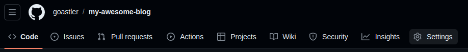
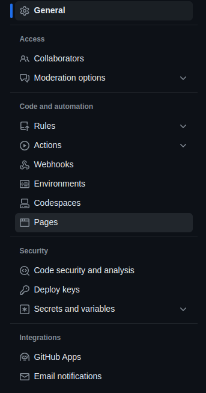
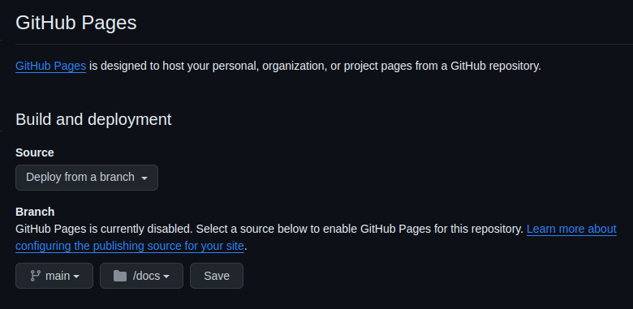
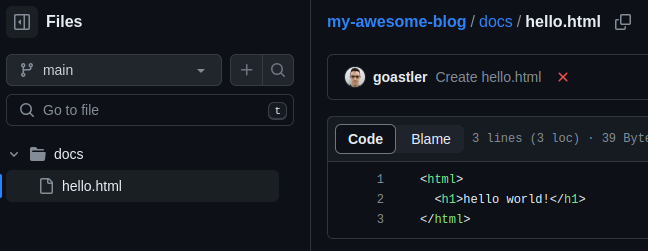
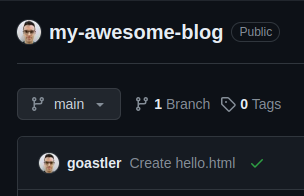
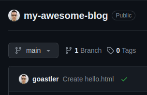
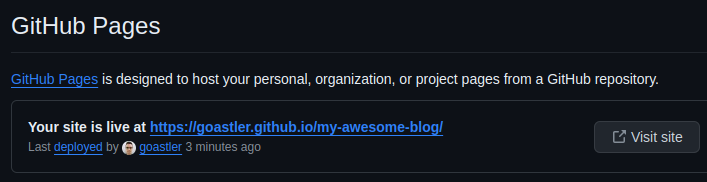
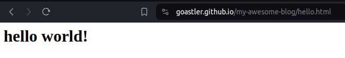

Hosting a static website on Github Pages
How to Host Your Website on GitHub Pages 🚀
Welcome, fellow developer! Are you looking for an easy and free way to host your website or project online? Look no further than GitHub Pages. In this tutorial, I’ll guide you through the process of hosting static content on GitHub Pages, making your project accessible to the world with just a few simple steps.
What is GitHub Pages?
GitHub Pages is a static resource hosting service provided by GitHub. It allows you to host your website directly from your GitHub repository. This means you can easily maintain and update your site using Git and GitHub’s familiar interface.
Why Use GitHub Pages?
Hosting your site on GitHub Pages is free, simple, and requires minimal maintenance. It’s perfect for showcasing your projects, personal websites, or documentation.
What You’ll Need:
- Basic understanding of Git and GitHub
- An HTML file or static content for your website
Time Required:
Following this tutorial should take you no more than 15 minutes.
-
Create a GitHub Repo: Start by creating a new public repository on GitHub for your website. Make sure it’s public, as GitHub Pages cannot host content from private repos.

-
Go to Settings: In your repository, navigate to the Settings tab.
 
-
Configure GitHub Pages: Under the Settings tab, find the GitHub Pages section. Choose the branch where your site’s source code resides (usually main) and select the folder (root or docs) containing your site’s content. Click ‘Save’ to apply your changes.

-
Create Content: Add your website’s content to the selected folder. For example, you can create an “index.html” file for your homepage.

-
Wait for GitHub Actions: GitHub Pages uses GitHub Actions to process changes and host your site. Once you’ve made changes to your content, GitHub Actions will automatically trigger a build process.
 
 -
Find Your Site URL: Your site will be hosted at
<your GitHub username>.github.io/<your repo name>. You can also find the URL in the GitHub Pages settings.
-
Visit Your Site: Voila! Your site is now live. Visit the URL to see your hosted content in action.

And there you have it! In just a few steps, you’ve successfully hosted your static content on GitHub Pages. Whether it’s a personal portfolio or a project showcase, GitHub Pages makes it easy to share your work with the world.
Thank you for reading! Stay tuned for more helpful tutorials and tips. Happy coding! 🌟
- GitHub Pages
- Static Content
- Hosting
- GitHub
- Tutorial
- Website Deployment
- GitHub Actions
- Web Development
- HTML
- Git